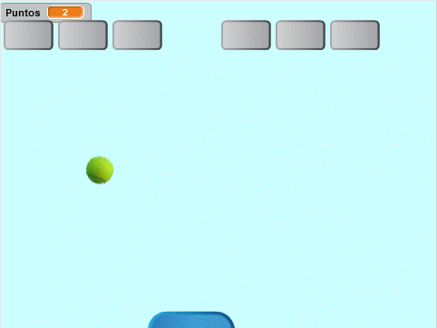
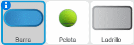
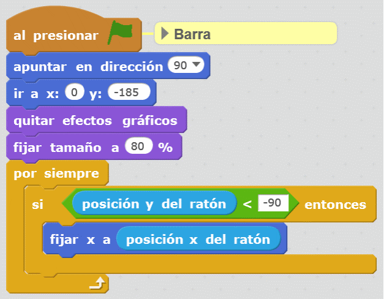
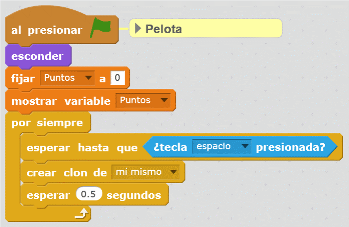
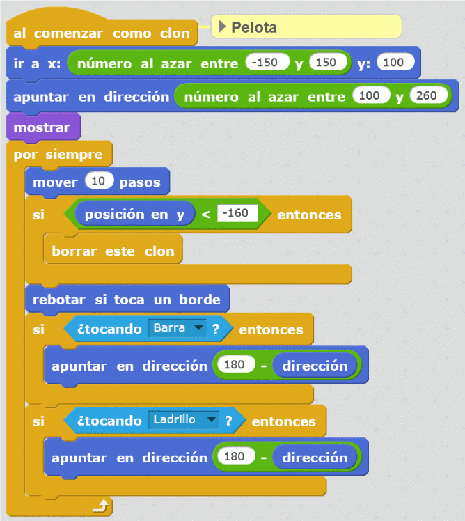
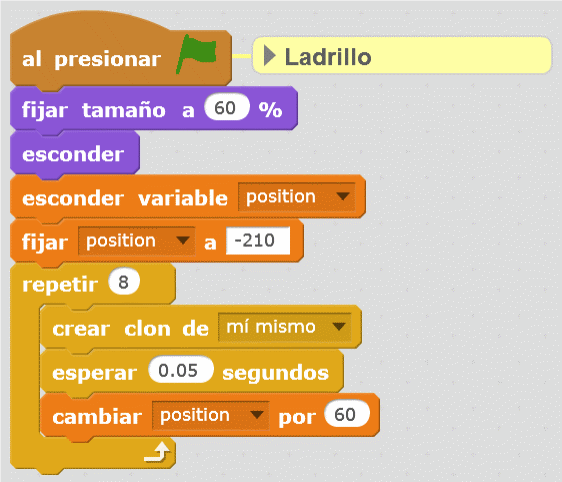
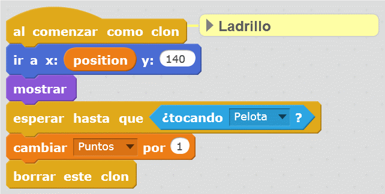

6. Break bricks¶
{kind=link}
In this practice we are going to program a game that consists of breaking bricks with a ball that bounces off a bar. Each broken brick will give us a point.
We start the Scratch editor.
We delete the cat by clicking on it with the right mouse button and then pressing delete.

We added three new characters. A blue button, a tennis ball and a gray button.
Next we will change the names of the three new characters by pressing the blue "i" button of each of the characters.
We will name the blue button bar.
We will call the tennis ball a ball.
We will name the gray button brick.
Now we will create the variable Points.
Within the Data
 tab,
tab,press create a variable

We change the name of the variable to Points

Finally we press the button OK
This variable will store the points we get by breaking each brick.
Now we will create the variable position.
Within the Data
tab,press create a variable
We change the name of the variable to position
This variable will store the position of each of the bricks when starting the program.
Now we will add the Bar program.
First we select the Bar and then the programs tab.
We add the following blocks.
Next we will add the Ball program.
First we select the Bar and then the programs tab.
We add the following blocks.
 Finally we will add the Brick program.
First we select the Brick and then the programs tab.
We add the following blocks.
 Now we will test that all the programs work correctly by playing a game.
{kind=link}
{kind=link}
{kind=link}
{kind=link}
{kind=link}
Exercises¶
- Modify the program so that more bricks appear on top.